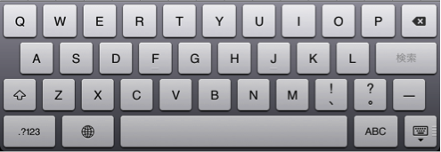
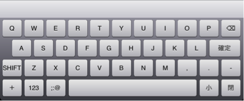
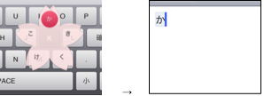
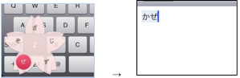
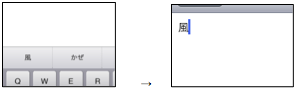

QWERTYソフトキーボード上のフリック日本語入力システム
タブレット計算機のQWERTYソフトキーボード上でのフリック操作を利用した日本語入力システム「Blossom」を提案する．
タブレット計算機で広く利用されているQWERTYソフトキーボードにおいて，
キーを普通にタップすると英数字が入力され，
タップしてからスライドする「フリック操作」を行なうとひらがなが入力されるようにすることにより，
キーボードを切り換えることなく英数字と日本語の入力が可能になった．
1． はじめに
サイズが大きいタブレット計算機では，
パソコンで使われているQWERTYキーボードと同様の機能をもつソフトキーボードが広く利用されている．
パソコンのQWERTYキーボードで英数字を入力したりローマ字で日本語入力を行なったりする場合，
特種なキーを押してモードを切り換えるのが普通であるが，
モード切り換えは面倒であるうえに現在のモードを把握できず混乱することがある．
図1，2に示したiPadのソフトキーボードでは，
一見してモードの違いがわからないため間違った操作をしてしまいやすい．

図1 iPadのローマ字入力モード

図2 iPadの英数字入力モード
近年のスマートフォンでは，
テンキーをタッチした後で指をスライドさせる
「フリック操作」によって様々な文字を高速に入力できるものがあるが，
この手法をQWERTYキーボードに適用し，
ソフトキーボード上でフリック操作を行なうとひらがなを入力し，
普通にタップした場合は英数字を入力できるようにすることにより，
モード切り換えを行なわずに英数字とひらがなを入力することが可能になる．
このアイデアに基づいた入力システム「Blossom」の解説と評価について述べる．
2． Blossom利用例
2．1 基本操作
図3にBlossomの入力画面を示す．
これは従来のQWERTYキーボードとほとんど同じものであるが，
Blossomでは英字キーをタップした後で5方向に指をスライドする
(フリック操作を行なう)ことによりひらがなを入力することができる．

図3 Blossomの入力画面．
平仮名の「か」「ぜ」を入力する様子を図4， 5 に示す．
Blossomでは，
ローマ字入力における子音キーをタップすると
キーの周りにそのキーに対応した平仮名文字が周囲に表示され，
入力したい文字の方向に指をスライドさせて離すことによって
平仮名文字を入力することができる．

図4 「K」キー上でフリック操作を行なうことにより「か」を入力

図5 「Z」キー上でフリック操作を行なうことにより「ぜ」を入力

図6 漢字への変換
2．2 ローマ字入力との併用
Blossomでは，
フリック入力と通常のローマ字入力を併用することが可能になっている．
たとえば「あした」という文字を入力する場合，ユーザは以下の動作のどちらでも入力が可能である．
すべてフリック入力の場合
- 「a」キー上のフリック操作により「あ」を入力
- 「s」キー上のフリック操作により「し」を入力
- 「t」キー上のフリック操作により「た」を入力
一部ローマ字入力の場合
- 「a」キー上のフリック操作により「あ」を入力
- 「s」キーをタップ
- 「i」キーをタップ
- 「t」キーをタップ
- 「a」キーをタップ
一方，「ashita」という文字列を入力を行なう場合は
ユーザは以下のような操作を行なう．
- 「a」キーをタップ
- 「s」キーをタップ
- 「i」キーをタップ
．．．
Blossomでは，日本語を入力中かどうかを自動判別することにより
このような動作の切り換えを行なっている．
図7に入力文字判定の状態遷移を示す．

図7 入力モードの状態遷移
初期状態は英数字入力モードになっている．
ここで「a」などのキーをタップした場合は「a」のような英数字が直接入力されるが，
フリック操作によって「ka」などが入力された場合は日本語入力モードに遷移して
「か」が未変換文字列となる．
ここで「a」キーをタップするとローマ字入力と解釈され「あ」が未変換文字列に追加される．
未変換文字列を漢字に変換して確定したり未変換のまま確定したりすると英数字入力モードに復帰する．
このように，
Blossomはユーザの入力の仕方によって動的に内部の入力モードを変換し，より
文脈に沿った振る舞いをするため，ユーザは日本語/英字をストレスなく入力す
ることが可能になっている．
この判別方法を用いる場合，
日本語の入力はフリック入力から始める必要がある．
言い換えると，この仕様では，英字からローマ字入力を始めることはできない．
3.2で挙げた例では，
「asita」という入力の組み合わせが出ていないが，それは，入力が確定された
状態から単なる「a」が入力された場合，それが「ローマ字入力での『あ』」な
のか「英字入力での『a』」なのかの判別がつかないからである．
例えば英字入力モード中に「a」のあとに「k」「a」と入力された場合，
それを「あか」と入力されたと判定して「aka」を「あか」と変換してしまうと,
「email」のようなローマ字変換が可能な英字との判別ができず，
ユーザが期待した文字の入力が実現できない。
このため，Blossomでは確定状態からの最初の入力でモードを判別するように実装されている.
2．3 濁音・半濁音の入力
通常，スマートフォン上でのフリック入力では「ば」や「パ」などの濁音・半
濁音を入力する際，まず「は」という文字を単体で入力してから「゙」や「゚」
を付加する必要があるが，Blossomの場合，qwertyキーボード上にすべての濁音，
半濁音に対応するキーが存在するため，その必要がない．「が」行なら「G」，
「ぱ」行なら「P」のキーをフリックすればよい．また「J」のキーをフリック
した場合は「じゃ」「じ」「じゅ」「じぇ」「じょ」が入力でき，時間の短縮
になる．
2．4 小文字の入力
小文字を入力するためにはいくつかのの方法がある．ひとつは，「x」「l」キー
を使用する方法である．通常，ローマ字入力では「xa」や「la」で「ぁ」と入
力できるが，Blossomでも「x」「l」キーをフリックすることによって小文字の
「ぁ」「ぃ」「ぅ」「ぇ」「ぉ」を入力することができる．図5フリックによる
小文字の入力もう一つの方法は「小文字キー」を用いる方法である．「小文字
キー」はキーボード最下段右から二番目に配置されているキーで，未確定の日
本語平仮名が入力欄にある場合にタップすると，その最後の文字が小文字化可
能(あいうえおやゆよつわ)だった場合に小文字に変換し，それがすでに小文字
だった場合大文字に直す．
「っ」は4種類の方法で入力できる．一つ目は，前項であげた「小文字キー」を用いる
方法である．二つ目は図7のように，「小文字キー」をフリックすることである．
図7小文字キーをフリックした状態小文字キーはタップした動作では大文字と小
文字を相互変換する機能があるが，フリックすると，「x」「l」のフリックで
は表示されない小文字と撥音をワンジェスチャで入力することができる．三つ
目の方法は，ローマ字入力中に「n」を除く同じ英字を二回連続して入力するこ
とである．これはPC上での入力とほとんど同じであるが，PC上で「tt」と打っ
た際に「っt」と入力されるのに対して，Blossom上では「っ」と入力される．
これは，続けてフリック入力をする場合後ろの「t」の文字が邪魔になるからで
ある．4つ目の方法は，ローマ字入力中に「n」を除く英字一文字を平仮名で挟
むことである．具体的には，「らっぱ」と入力したい場合は，
- 「ら」とフリックもしくはローマ字で入力
- 「p」とタップで入力
- 「ぱ」とフリックで入力
と「らpぱ」と入力することによって，間の「p」が自動的に「っ」に変換され，「らっぱ」となる．これを「はさみうち変換」と呼ぶ．
2．5 撥音の入力
「ん」の入力は，ほとんど「っ」と同じである．「ん」は，以下の3つの方法で入力できる．
- 小文字キーのフリック
- ローマ字入力中に「n」を連続で入力
- 「はさみうち変換」に「n」を用いる
2.5 実装方法
タブレット状での安定した動作のため，iOS SDK (Objective-C)を用い，iPad上で実装を行った．
ソースコードは https://github.com/keroxp/Blossom-iOS で公開している．
3． 評価
入力動作の軽減，速度の向上
「あしたてんきになれ」という文章を入力するときに，ローマ字入力の場合は
「asitatennkininare」のように合計17タップしなくてはならないが，すべてフ
リック入力を用いれば，最終的な文字数と同じ9文字で済む．単純に計算しても，
必要な動作数が約1/2になるので，全体的な入力速度の向上が見込める．また，
ローマ字入力を併用可能なかたちで設計されているため，少なくとも現状の入
力方法より遅くなるということはない．
日本語/英字入力の簡易化
従来の入力モードを廃止し，日本語/英字をシームレスに入力できるため，ユーザの入力はより快適になる．
タッチパネル以外への移植可能性
テレビやゲーム機のような，物理的なキーボードインターフェースを持たない計算機では，頻繁に文字入力が発生するにもかかわらず，そのために適したインターフェースが提案されておらず，不便である．Blossomで採用している5方向フリック入力は，タッチパネル以外でも応用が可能であり，例えば，PlayStation®やWii®などのコンシューマゲーム機のコントローラで用いられているジョイスティック型のインターフェースなどは，この入力方法に適している．
数字と記号入力問題
現状の実装では，数字と記号の入力について具体的な入力方法を用意出来ていない．キーボード最下段に「数字キー」と「記号キー」を用意しているが，そこから数多ある記号をどのように入力するのかは再考の余地があるといえる．
モード判定不可能問題
2．1で述べた通り，入力が確定された状態から次の状態へ移る際の決定が現
状の仕様では一文字の入力をまたなくてはならないため，最初からローマ字入
力をしたい場合にはそれができない．これは，テストの際，ローマ字入力にな
れたユーザがよく陥ったミスで，この解決方法も考える必要がある．具体的に
は，CapsLockのようにローマ字入力を固定するキーを用意する方法が挙げられ
るが，そうすると実質的に入力モードを明示的に切り替える必要があるという
ことになり，理念と反するため，本質的な解決方法とは言えない．
4．関連研究
タッチパネル上での日本語入力入力インターフェースの研究はすでに様々なものが提案されているが([1][2][4])、
これらはいずれも画面の小さいスマートフォン向けのインタフェースであり，
本研究が目的としているタブレット端末上での入力には適していない．
また，タブレット端末上での入力に関しては，長谷川らの研究[3]があるが，
これは両手で把持した際の入力方法であり，多くのユースケースに対応できる入力方法とは考えにくい．
Blossomは，従来のQWERTYキーボードをインタフェースとして用いているため，
把持して用いるだけでなく，机などに置いた状態でも利用が可能である．
5. 結論
現在，スマートフォン上で文字を入力する機会はとても増えているが，それらの多くはメールやSMS，メモ書きといった比較的短い文章である．タブレット端末は，書類やレポートなどの長い文章を取り扱う機会が多いが，ソフトウェアキーボード上での文字入力はタクタイル・フィードバックが無いため，ミスが多く，その機能が有効活用されていない．今後，ビジネスや学校などの公的な現場でのタブレット端末の導入が進むにつれ，タブレット端末により適した文字入力の方法へのニーズは徐々に高まっていくと考えられる．Blossomはタブレット端末上での文字入力を従来の方法と競合しない形で改良し，より高速な文字入力を実現しているため，パソコンとの併用も可能であり，すでにパソコンの入力になれたユーザも容易に習得することが可能である．今後は，パソコンの物理キーボードの入力に負けない速度，精度をソフトウェアキーボードで実現していくことを検討していく．
参考文献
- 増井 俊之.
ユニバーサルなテキスト入力システムをめざして.
情報処理学会第52回冬のプログラミングシンポジウム予稿集, pp.1-10, 2011.
- 君岡 銀兵, 志築 文太郎, 田中 二郎.
マルチタッチを利用した携帯情報端末用日本語入力方式とその評価.
情報処理学会ヒューマンコンピュータインタラクション研究会研究報告, Vol.138, pp.J1-J6, 2010.
- 長谷川 伸吾, 赤池 英夫, 角田 博保.
両手で把持したタブレットのための入力手法の提案と評価.
情報処理学会ヒューマンコンピュータインタラクション研究会研究報告, Vol.2012, pp.301-5, 2012.
- 片山 拓也, 村尾 和哉, 寺田 努, 塚本 昌彦.
片手用キーボードによる打鍵間隔を活用した文字入力手法.
情報処理学会論文誌, Vol.544, pp.1667-1676, 2013